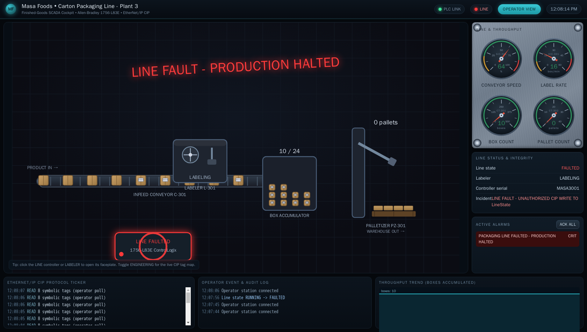

Exercise ICSPT-5.1: Talking CIP
Engagement Status
| Client | Masa Foods, Inc. (fictional) |
|---|---|
| Role | OT Security Engineer, Plant 3 |
| Phase | Discovery Protocol Literacy (Modbus, S7) Protocol Literacy (CIP) Detection |
What you know so far: You completed Level 4 across Plant 2 (Siemens S7comm) and handed the protection audit to Reyna Alvarado. Reyna has now cleared you for Plant 3, the packaging and warehouse facility. Plant 3 runs two different protocol stacks: Allen-Bradley ControlLogix PLCs speaking CIP over EtherNet/IP and a DNP3 outstation for warehouse power telemetry. Exercise 5.1 is your first contact with the Plant 3 packaging PLC and the first time you speak CIP.
Environment Checklist
Plant 3 is a new facility with new dependencies. Everything in this section is new. Exercises 5.2 and 5.4 will refer back here, so complete every step now.
Install pycomm3 on Kali
The pycomm3 library provides a Pythonic interface to Allen-Bradley ControlLogix and CompactLogix PLCs over EtherNet/IP. Install it from PyPI and verify the import succeeds.
Expected output: pycomm3 ok. If the import fails, check that pip installed to a directory on your PYTHONPATH and retry.
Resolve plc-packaging.masa.local
Plant 3 targets are not in your /etc/hosts from previous levels. Add one line for the packaging PLC:
Kali
The OCR platform will show you the lab target IP in the session view; use that value for LAB_IP if DNS resolution is empty. Expected: succeeded! on TCP/44818.
Scenario
Plant 3 in Laredo runs the finished-product packaging line. An Allen-Bradley ControlLogix 1756-L83E manages the conveyor, labeler, and palletizer. Reyna Alvarado wants you to enumerate every tag on the PLC, read each one, and extract the commissioning certificate from the FlagBlock tag. No writes, no disruption. Prove you can speak CIP and inventory the tag namespace.
Why this matters
CIP (Common Industrial Protocol) is the application layer that rides on top of EtherNet/IP (TCP/44818). Where Modbus addresses data by register number and S7comm addresses data by datablock number and offset, CIP addresses tags by name. A tag called ConveyorSpeed is read by asking for ConveyorSpeed, not for register 40001 or DB1 offset 4. Name-based addressing means the PLC exposes its own data dictionary. An attacker who can reach TCP/44818 can enumerate every tag name, learn the process variables, and read or write them without needing any documentation. Exercise 5.1 exists to make you fluent in that workflow so you understand the risk before you start testing Plant 3's defenses.
| Credentials in scope | Username | Password | Where it is used |
|---|---|---|---|
| Plant 3 HMI (reference) | plant_op |
masa_op_2025 |
Not used in this exercise |
Operator HMI access is listed for reference only. Exercise 5.1 touches the PLC directly over CIP and does not log in anywhere.
The operator cockpit
Plant 3 runs a live operator cockpit for the carton packaging line. Open it in a browser at the address shown for ophmi-packaging in the Exercise Network panel (HTTP, port 80); from the in-lab Kali the name ophmi-packaging.masa.local also resolves. The cockpit animates the conveyor, labeler, box accumulator, and palletizer in real time and carries a live CIP traffic ticker, so every tag you read over EtherNet/IP shows up on the same screen the floor supervisor watches.

Flip the cockpit into its Engineering view and every element is labelled with the live CIP tag behind it, so the conveyor block reads ConveyorSpeed and the palletizer reads PalletCount straight off the HMI. The same symbol table you are about to pull with get_tag_list() is one click away on the operator console.

Objectives
- Install and verify
pycomm3on Kali - Connect to the Plant 3 packaging PLC on TCP/44818
- Enumerate the full tag list using
get_tag_list() - Read every tag and identify each data type
- Extract the commissioning certificate from the
FlagBlocktag
| Detail | Value |
|---|---|
| Difficulty | Beginner |
| Estimated Time | 20 to 30 minutes |
| Prerequisites | Exercise 4.1 (S7comm basics) |
| Flag | Source | Found? |
|---|---|---|
OCR{...} |
FlagBlock tag on the packaging PLC |
Background: What CIP and EtherNet/IP Are
EtherNet/IP is the industrial Ethernet standard maintained by ODVA. The protocol stack layers as follows:
| Layer | Purpose |
|---|---|
| TCP/44818 | Transport (explicit messaging) |
| EtherNet/IP encapsulation | Session registration, send/receive data framing |
| CIP (Common Industrial Protocol) | Application layer: tag reads, tag writes, device identity |
Tag-based addressing
Modbus uses numeric register addresses (40001, 30001). S7comm uses datablock numbers and byte offsets (DB10, offset 0, length 32). CIP uses symbolic tag names. The PLC maintains an internal symbol table that maps each tag name to a memory address, a data type, and access permissions. The pycomm3 method get_tag_list() retrieves that entire symbol table in one call.
The same name-based addressing that makes enumeration easy also makes manipulation easy. An unauthenticated CIP write to a control tag such as LineState flips the packaging line to a fault state in a single request. Exercise 5.1 only reads, but the cockpit makes the stakes visible: the screen below is the same line after one unauthorized write.

CIP data types
| CIP Type | Constant | Size | Python equivalent |
|---|---|---|---|
| INT | 0x00C3 | 2 bytes | signed 16-bit integer |
| DINT | 0x00C4 | 4 bytes | signed 32-bit integer |
| STRING | 0x00DA | variable | ASCII string with length prefix |
Allen-Bradley PLCs also support BOOL, REAL, and user-defined types. The Plant 3 packaging PLC uses only INT, DINT, and STRING.
pycomm3 LogixDriver
pycomm3 provides LogixDriver, a high-level client that handles session registration, Forward Open connection setup, and CIP message framing. The key methods are:
get_tag_list(): enumerate every tag name, type, and instance IDread(tag_name): read a single tag and return its valuewrite(tag_name, value): write a value to a tag
Tools You Will Need
| Tool | Purpose |
|---|---|
pycomm3 |
CIP/EtherNet/IP client library for Allen-Bradley PLCs |
nc (netcat) |
Verify TCP/44818 reachability |
| Wireshark | Optional capture to inspect EtherNet/IP framing |
Walkthrough
Stage 1: Verify the Stack
Confirm that pycomm3 is importable, the hostname resolves, and the CIP port is open before you begin.
Kali
All three must succeed before you continue.
Stage 2: Enumerate Tags
Open a Python script that connects to the PLC and retrieves the full tag list. The LogixDriver constructor takes the target hostname or IP. Setting init_tags=False prevents the driver from automatically reading every tag during connection setup, giving you explicit control over what happens on the wire. After connecting, call get_tag_list() to retrieve the symbol table. Each entry contains the tag name, the CIP type code, and the instance ID.
Kali
Expected output
Nine tags total. Note how each tag name is human-readable. An attacker on the OT LAN now knows every process variable on the packaging line without needing any engineering documentation.
Stage 3: Read Every Tag
Now read all nine tags to see their current values. Loop over the tag list and call read() on each one. The read() method returns a Tag object whose .value attribute holds the decoded Python value.
Kali
Expected output
The exact numeric values for ConveyorSpeed, BoxCount, and PalletCount will differ because the PLC simulation is live. The FlagBlock value is your flag.
Stage 4: Read the Flag Directly
For a clean read that you can copy and submit, read only the FlagBlock tag. A direct single-tag read is also the pattern you would use in a real engagement to minimize wire traffic.
Kali
Copy the flag value and submit it in the OCR platform.
Output Interpretation
get_tag_list()returns a list ofTagdescriptor objects. Each has.tag_name(string) and.type_info.data_type(integer CIP type code)read()returns aTagresult object. Check.valuefor the decoded value and.errorfor any CIP error string- If
read()returnsNonefor value and a non-empty.error, the PLC rejected the read. Verify you are connected to the correct host - INT and DINT values are live process data and will change between reads. STRING values (
SerialNumber,FlagBlock) are static
Analysis Questions
1. CIP addresses tags by name. How does that change the threat model compared to Modbus register numbers?
Reveal answer
Modbus register numbers are meaningless without documentation. An attacker who reads register 40001 sees a raw integer and must guess what it controls. CIP tag names like ConveyorSpeed and LabelerState are self-documenting. An attacker on the OT LAN can enumerate the entire process model without any prior knowledge. The risk of targeted manipulation is significantly higher because the attacker does not need a register map.
2. The PLC returned 9 tags in Exercise 5.1. In a real ControlLogix, how many tags might a production program expose?
Reveal answer
A production ControlLogix program can expose hundreds to thousands of tags. Large process lines commonly have 500 to 2000 tags covering motors, valves, sensors, alarms, PID loops, and diagnostic counters. A single get_tag_list() call returns all of them. Segmenting the OT network to prevent unauthorized hosts from reaching TCP/44818 is the primary mitigation.
3. Exercise 5.1 used init_tags=False when constructing the LogixDriver. What would happen without that flag?
Reveal answer
Without init_tags=False, LogixDriver calls get_tag_list() and reads every tag automatically during connection setup. For a 9-tag simulator that is harmless. On a production PLC with thousands of tags, the automatic bulk read generates significant CIP traffic that could trip an IDS or slow the PLC's communication processor. Setting init_tags=False gives the assessor explicit control over what traffic is generated and when.
4. EtherNet/IP uses TCP/44818 for explicit messaging. What is implicit messaging and why does it matter for security?
Reveal answer
Implicit messaging uses UDP/2222 for cyclic I/O data exchange between a PLC and its I/O modules. Implicit messages are connectionless, high-frequency, and carry real-time control data. An attacker who can inject UDP/2222 frames can manipulate I/O values without ever opening a CIP session on TCP/44818. Firewall rules that block only TCP/44818 leave implicit messaging wide open. A complete defense must filter both TCP/44818 and UDP/2222.
Defensive Recommendations to Masa
| Finding | Risk | Mitigation |
|---|---|---|
| Packaging PLC answers unauthenticated CIP reads from any host on the OT LAN | High | Restrict TCP/44818 access to the engineering workstation VLAN using firewall rules or the ControlLogix Trusted Slot feature |
| Tag names expose the entire process model to any CIP client | Medium | Enable CIP Security (TLS identity and integrity) on the ControlLogix firmware to authenticate clients before tag enumeration |
| No EtherNet/IP IDS signatures on the Plant 3 segment | Medium | Deploy Snort or Zeek with EtherNet/IP and CIP dissectors, baseline normal tag-read patterns, and alert on enumeration bursts |
| FlagBlock contains a static credential stored as a cleartext STRING tag | Low | Move commissioning certificates to the asset management system, not inside PLC memory |
Key Takeaways
- CIP rides on EtherNet/IP over TCP/44818.
pycomm3handles session registration and Forward Open framing so you can focus on tags - CIP addresses tags by name, not by register number. A single
get_tag_list()call exposes the entire process data dictionary - Allen-Bradley ControlLogix PLCs expose INT, DINT, and STRING tags. Reading them requires no authentication by default
- Nine tags on a simulator is small. Production PLCs expose hundreds of tags, making network segmentation the critical first defense
- The
init_tags=Falsepattern gives you explicit control over CIP traffic volume during an assessment